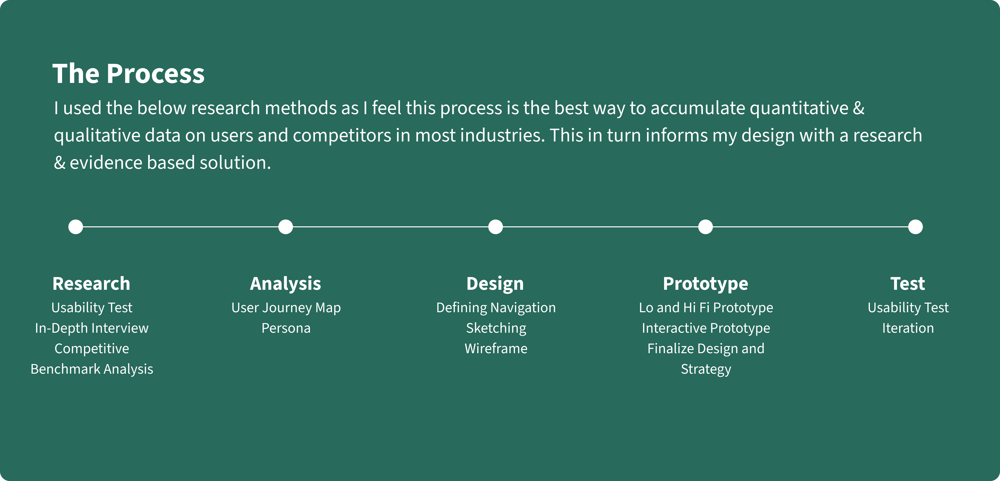
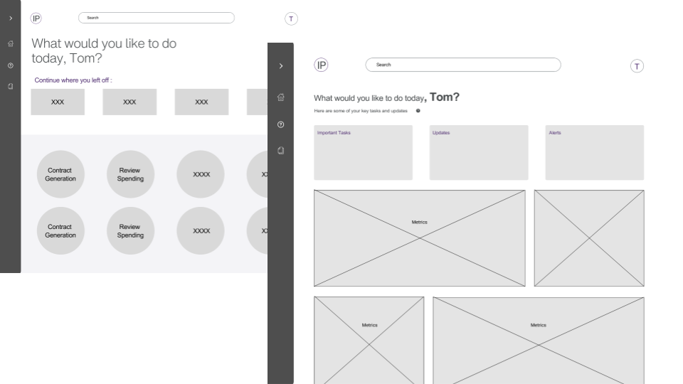
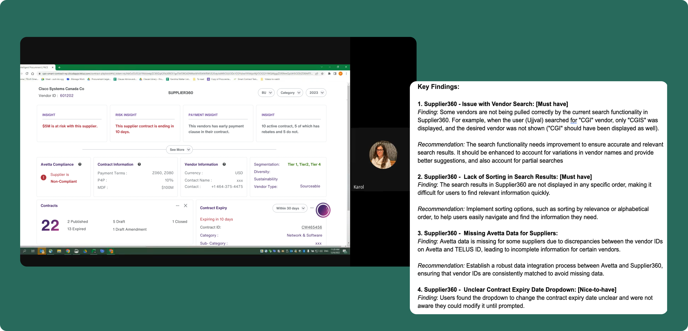

Overview
IP is a tool which aims to manage all aspects of vendor-related spend under one central digital platform
Context
- Role — Led UX Design & Research, Wireframing, Mock up design, Prototyping, Design Presentation to stakeholders, Handover and delivery support.
- Team— 1 Lead UX Designer, 1 PO, 3 Developers
The Problem
Throughout the team, numerous dashboards and tools were being developed to expedite users' access to necessary information. Each of these tools possessed a distinct URL, leading to difficulties for users in managing these links. Frequently, users found themselves either repeatedly requesting for the links or forgetting the existence of certain tools altogether.
The Vision
The IP project started as a vision to bring all tools under procurement which were at that time acting as seprated tools into one consolidated platform. This envisioned platform would seamlessly integrate various tools, enabling users to access a spectrum of vital information—from overarching profit and sales data to individual vendor contracts.
Rather than disparate tools coexisting on a single page, the vision I crafted envisions a fluid flow of interconnected aspects, enhancing efficiency and user experience.
The Role
As a Product, UX, and Ul designer, my involvement spanned all stages of the design process: research, strategy, design, and user testing.
Defining product design concepts, information architecture, and creating wireframes. Making decisions around content, design, and product strategy informed by metrics and research. Planning and conducting design research, organizing workshops with stakeholders to discuss research findings and synthesize solutions, and validating design decisions through usability studies.
Led brainstorming sessions with stakeholders to create a shared understanding of business and user needs, coordinated product strategy, and prioritized product backlog based on business goals.
The Research
The foundation of the UX design process for the IP tool began with extensive research and analysis, aiming to understand the unique needs, limitations, and aspirations of users in the procurement team. Primary and secondary research methodologies were employed, encompassing interviews, surveys, and data analysis of how the teams use the current tools and what are some of the pain points they incur.
User Interviews
10 users accross various procurement teams were interviewed to understand their day to day working and what are some of the areas which can be improved upon to assist them in their activities.

Affinity Mapping
The interview findings were subsequently mapped to identify primary pain points and opportunities, which will be integrated into phase 1 of the tool.
Key Findings
- Information fragmentation across multiple documents results in missed opportunities.
- Charting and analysis are time-consuming tasks in their daily workflow.
- Multiple contracts with vendors are a common occurrence.
Competitive Analysis
I then went on to conduct extensive Competitive Analysis to understand some of the tool which provide similar solutions like SAP and procurify
The Design Process
I transformed the outlined specifications for each page into preliminary wireframes, utilizing the UDS design system.
User Flow & Wireframing
In this segment I delved into the strategic development of user flows and wireframes. It highlights the pivotal role these elements play in illustrating user journeys and interface structures. By focusing on intuitive flow design and meticulous wireframing, I ensured that there is a seamless and user-centric experiences.
Low-Fidelity Designs
The primary objective behind crafting these Lo-Fi wireframes was to breathe life into the approved UX blueprints and visualize the structure, as well as the overall look and feel of the pages.
This phase provided an opportunity to assess the suitability of various components, identifying any that might not perfectly align with the design objectives. By pinpointing such components, we could strategize replacements with more fitting alternatives. Following the creation of the wireframes, I would conduct a presentation for the client, guiding them through the structural aspects and addressing any inquiries they might have.
Usibility Testing
I conducted 4 Usability Tests, which consisted of a series of interviews and surveys. I used Google Meet session for the 1:1 interviews with CM/CLs and gathered data. Usability testing was the perfect tool for comparison tests, allowing me to monitor and probe real users on their interaction with the tool and evaluate the steps they undertook. This approach tells me a lot about how the user flows through the journey, what pain points they hit, and what they would like to see improved. It also highlights any positive aspects I could consider in my design. For the test, I set a series of tasks to be completed on IP tool. This would allow me to make an accurate comparison.
This testing was done when the initial POC (based on business requirement from stakeholder) was created. This process drove the user requirement for Phase 1 release as well as informed the requirements for future releases. There was a series of 1:1 interviews, as well questionnaires which were sent out to users to gather their feedback on how they were able to navigate through the tool. Let me know if this is what you were looking for or if you need anything further.
Client Review
After finalizing both the visual elements and copy, along with the completion of the final wireframes, I would proceed to present the comprehensive design and wireframes to our client at Telus. Subsequently, the client would provide valuable feedback on the ultimate design and wireframes.
Iterations
Frequently, clients would submit requests for iterations on specific sections of the designs following internal discussions on their end. Upon completing the iterations, we obtained final approval from the client for the wireframe design. Subsequently, we transmitted the approved wireframe designs, along with all associated assets and documents, to the development team for the construction and launch of the tool.
The Final Design


Future State
The next evolution of this tool is to integrate a GEN AI chat feature.This feature will have the capability to retrieve relevant information, draft contracts, and alert users about any critical details they need to prioritize.


Disclaimer: Due to companies confidentiality , I can not provide all the screens designed, wireframes and full prototypes here.